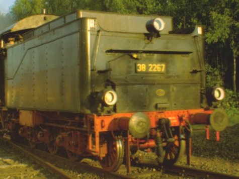

Krümelbahn
KrümelbahnKastentender 2'2'T21.5

Literaturhinweise
- Messerschmidt, Wolfgang: Dampflokomotiven und ihre Tender,
Franckh'sche Verlagshandlung Stuttgart 1987, ISBN 3-440-05778-X

Umbaubeschreibung
|
 |

|
Tender der pr.P8, 38 2267 Eisenbahnmuseum Bochum-Dahlhausen [15-6-96] |
Tenderrückansicht hier: Schneepflug |
Einige Dienstfahrzeuge haben als Basis einen alten Kastentender 2'2'T21.5, so z.B. der Schneepflug oder der Unkrautsprengwagen.
Beim Umbau bzw. der Detaillierung dieses Tenders fallen gleiche oder ähnliche Umbauarbeiten mit den gleichen Zurüstteilen an.
Die Ausführungen auf dieser Seite sollen die Einzeldarstellungen auf den entsprechenden Umbauseiten ergänzen.
Basisfahrzeuge und Ersatzteile
| Märklin | Liliput | Roco | Weinert | Hinweise | |
|---|---|---|---|---|---|
| Tender komplett | 224070 | 30815 | 4267 | Tender der pr.P8 (BR38) Märklin: Rad-Ø 10mm, 9 Speichen; Artikelnr.Lok=3098 Liliput: Artikelnr.Lok=unbekannt |
|
| Drehgestell | 219714 | 40278 | Märklin: komplett mit Achsen | ||
| Drehgestellblende | 90263 | Roco: von Tender wü.C, Artikelnr.Lok=43216 | |||
| Radsatz | 93392 | 5658 | Roco: von wü.C, Rad-Ø 11,5mm, 12 Speichen, Artikelnr.Lok=43216 |
Die Märklinradsätze (des kompletten Tenders) sind also eigentlich falsch.
Einzelne Räder habe ich auf Börsen auch von der Firma Gerard bekommen.
Alternativ kann auch das Kadee-Drehgestell #501 verwendet werden: dieses kommt dem Original sehr nahe, hat aber die falschen Radsätze...
Zurüstteile
(... oder was man im Allgemeinen so benötigt ...)
Die in dieser Liste enthaltenen Zurüstteile sind auch auf den einzelnen Umbauseiten aufgeführt, diese Zusammenstellung dient nur der besseren Übersicht.
| Stückzahl | Benennung | Best.Nr. | Techn.Daten | Hinweis |
|---|---|---|---|---|
| 1 | Güterwagenzurüstsatz | Weinert 9254 | Pufferbohle 2 Puffersockelplatten |
|
| 2 | Puffer | Weinert 8600 | (4er Pack) | Ø 5,2mm |
| 1 | Hakenkupplung | Weinert 8648 | (2er Pack) | nicht bei Anbau einer Fahrzeugkupplung |
| 2 | Bremsschläuche, glatt | Weinert 8290 | (4er Pack) | nicht bei Anbau einer Fahrzeugkupplung |
| 4 | Griffstangenhalter | Weinert 8465 | (20er Pack) | 2 Griffstangen an der Tenderrückwand |
| DB-Einheitslaternen für Dampflokomotiven |
Weinert 9002 | |||
| 1 | Signalscheibenhalter, gekröpft | Weinert 8263 | (10er Pack) | hinten Mitte am Tender |
| 2 | Signalscheibenhalter, gerade | Weinert 8273 | (8er Pack) | an Rückwand links und rechts |
| Messingdraht 0,3mm | für Griffstangen |